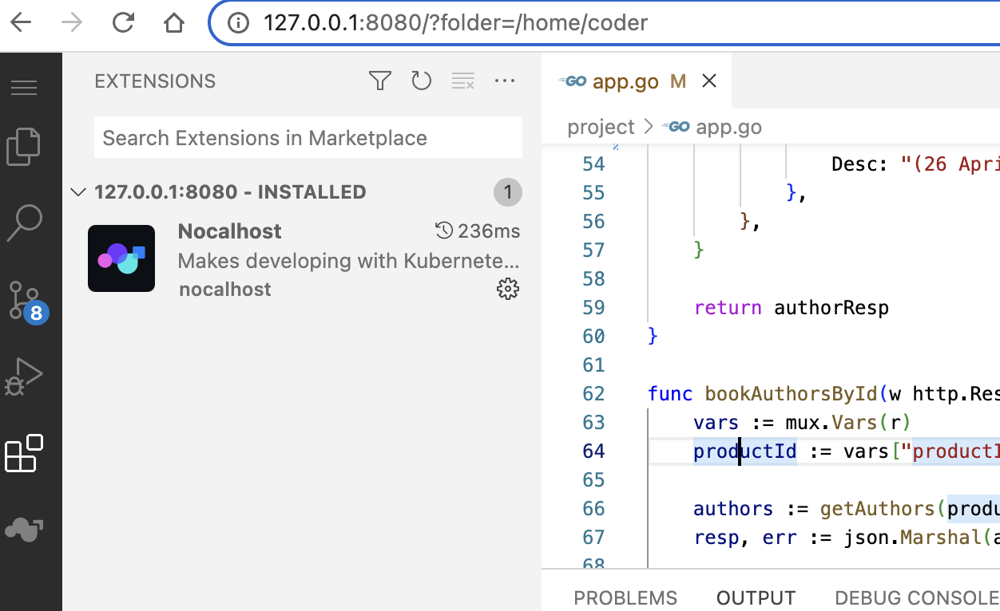

背景
之前写了一篇文章，分享了如何使用 kt-connect 来加速云原生的开发，但是在实际使用中发现一些问题，比如：
- 环境不一致，每个开发人员都需要安装和调试程序一致的运行环境，比如 golang 的命令行工具、python 的依赖库等
- 需要依赖 k8s 集群的资源，虽然 connect 模式打通后可以访问，但实测不稳定且速度慢
后面又看到了 nocalhost，一款开源的基于 IDE 的云原生应用开发工具，相比 kt-connect 具有以下优势：
- 在 k8s 集群内部构建、测试和调试应用程序，因此可使用基本一致的镜像
- 运行在 k8s 集群内部，访问资源更稳定、更快速
- 更改代码后实时同步到远端容器，无需重建镜像或重新启动容器
为了开发环境和线上环境更一致，后续决定使用 nocalhost 来进行本地开发调试。考虑到需要在公司内部推广使用，打算制作一个基于 code-server 和 nocalhost 制作的 web 调试镜像，实现以下功能：
- 本地 docker run 启动镜像后，即可打开浏览器进行代码编辑和调试
- 基于不同编程语言，制作不同的调试镜像（工作中主要是 golang 和 python）
增加 kubectl 命令
开发镜像是为了调试 k8s 集群中的服务，需要连接到 k8s 集群，因此需要安装 kubectl，参考 官网安装方式，增加以下 dockerfile 内容：
1
2
3
4
5
6
7
8
|
FROM codercom/code-server:latest
# install kubectl
RUN sudo apt-get update
RUN sudo apt-get install -y ca-certificates curl
RUN sudo curl -fsSLo /usr/share/keyrings/kubernetes-archive-keyring.gpg <https://packages.cloud.google.com/apt/doc/apt-key.gpg>
RUN echo "deb [signed-by=/usr/share/keyrings/kubernetes-archive-keyring.gpg] <https://apt.kubernetes.io/> kubernetes-xenial main" | sudo tee /etc/apt/sources.list.d/kubernetes.list
RUN sudo apt-get update
RUN sudo apt-get install -y kubectl
|
在编写时，可以先 run 一个 code-server 容器来测试：
1
|
docker run -it --rm --entrypoint /bin/bash codercom/code-server:latest
|
验证好了后，执行 build 来构建测试：
1
|
docker build . --tag "local-dev:v0.0.1"
|
增加 ssh 配置和 k8s 配置
参考 code-server 官网 docker 启动方式，并增加本地的。ssh 文件夹，用于拉取公司私有仓库代码，增加。kube 文件夹，用于连接和操作开发环境的 k8s 服务，因此为：
1
2
3
4
5
6
7
8
9
|
docker run -it --rm --name code-server \
-p 127.0.0.1:8080:8080 \
-v "$HOME/.config:/home/coder/.config" \
-v "$HOME/.ssh:/home/coder/.ssh" \
-v "$HOME/.kube:/home/coder/.kube" \
-v "$PWD:/home/coder/project" \
-u "$(id -u):$(id -g)" \
-e "DOCKER_USER=$USER" \
local-dev:v0.0.1
|
执行成功后，访问 http://127.0.0.1:8080 即可打开 code-server web 页面。
预安装 nocalhost 插件
使用上面的方式启动后，需要手动去扩展栏安装 nocalhost，为了方面，考虑能不能用命令行方式提前安装好呢。
答案是肯定的，参考这个 issue 里面的评论，看起来是可行的，进行验证后，做了两个小的调整：
- bsdtar 改为 libarchive-tools（包调整）
- curl 改为 wget（curl 测试有点问题）
最终预安装 nocalhost 插件的 dockerfile 内容为：
1
2
3
4
5
6
7
|
# install nocalhost extension
RUN sudo apt-get update && sudo apt install -y libarchive-tools wget
RUN mkdir -p /home/coder/.local/share/code-server/extensions
RUN wget -v https://marketplace.visualstudio.com/_apis/public/gallery/publishers/nocalhost/vsextensions/nocalhost/0.6.18/vspackage
RUN bsdtar -xvf vspackage extension
RUN mv extension /home/coder/.local/share/code-server/extensions/nocalhost.nocalhost-0.6.18
RUN rm -f vspackage
|
重新 build 后启动，可以看到 nocalhost 默认已安装：

在 nocalhost 里面连接集群后：
镜像增加 golang 开发环境
开发镜像是用 code-server 镜像作为基础镜像，没有安装 golang，需要在 dockerfile 增加：
1
2
3
4
5
6
7
|
# install golang
RUN wget https://go.dev/dl/go1.19.linux-arm64.tar.gz
RUN sudo rm -rf /usr/local/go && sudo tar -C /usr/local -xzf go1.19.linux-arm64.tar.gz
RUN rm -f go1.19.linux-arm64.tar.gz
ENV GOPROXY=https://goproxy.cn,direct
RUN sudo echo "export PATH=$PATH:/usr/local/go/bin" | sudo tee -a /etc/profile
RUN sudo echo "export PATH=$PATH:$HOME/go/bin" | sudo tee -a /etc/profile
|
安装 golang dlv：
1
2
|
# install dlv
RUN /usr/local/go/bin/go install github.com/go-delve/delve/cmd/dlv@latest
|
加载 vscode go 插件：
1
2
3
4
5
|
# install golang extension
RUN wget -v https://marketplace.visualstudio.com/_apis/public/gallery/publishers/golang/vsextensions/go/0.35.2/vspackage
RUN bsdtar -xvf vspackage extension
RUN mv extension /home/coder/.local/share/code-server/extensions/golang.go-0.35.2
RUN rm -f vspackage
|
开发镜像访问集群中服务
集群中服务需要暴露对外端口，这里用 nocalhost 提供的 bookinfo 的 author 模块来测试，需要将 productpage svc 修改为 node 类型，暴露对外端口：
1
2
3
4
5
6
7
|
ports:
- name: http
nodePort: 32428
port: 9080
protocol: TCP
targetPort: 9080
type: NodePort
|
在浏览器中开启调试模式后，启动服务 sh run.sh 后，访问地址：http://172.19.52.61:32428/ 。
其中 172.19.52.61 为 node 的 ip 地址，即可在页面上点击测试。
开发镜像测试启动服务
在 author 模块 app.go 文件中，修改其中的 getAuthors 函数： 将其中的 Name 字段改为“aa William Shakespeare”，然后执行 sh run.sh：
启动之后访问 http://172.19.52.61:32428/：
点击 normal user 后可以看到效果：
开发镜像测试调试服务【待解决】
在 author 模块 app.go 文件，bookAuthorsById 函数中增加断点，执行 sh debug.sh 发现会出现问题：
参考